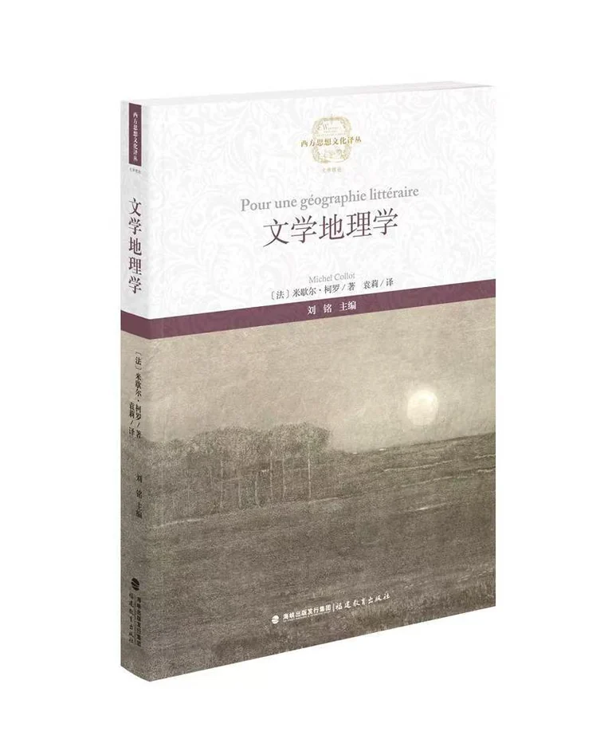

This English guide describes the Chinese edition. The heading is a translation of its Chinese title.
About this volume
The author offers a detailed account of literary space in France and of the basic concepts and development of literary geography. He examines the contributions of important scholars to the emergence of forms of literary criticism associated with human geography, geopoetics, geocriticism and fictional geographies. Through a geographical perspective, the book seeks to help readers rediscover the intricate, long-neglected relations between fiction and space.
Publication details
- Chinese title
- 文学地理学
- Author
- Michel Collot
- Chinese translation
- 袁莉
- Publisher
- Fujian Education Press （福建教育出版社）
- Published
- Edition language
- Chinese